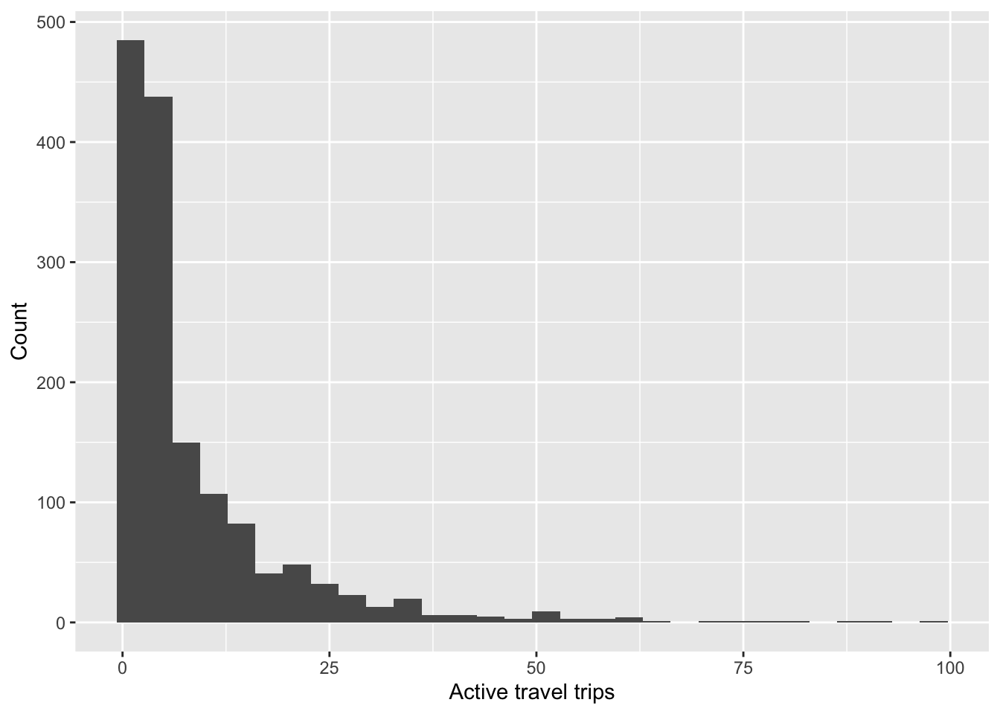

# Packages
library(tidyverse) # For data manipulation
library(gtsummary) # Descriptive statistics
library(performance) # For model fit measures7 Session 7: Poisson regression
7.1 Introduction
We will now explore count models, which are relevant in a number of transport applications for modelling variables such as the number of trips, number of vehicles, or number of collisions.
The Poisson model is well suited approach to discrete numeric outcomes from 0. Unlike linear regression, Poisson models do not allow any negative values, and values should be integer (0, 1, 2, …). As a rule of thumbs, the mean of the count should be lower than 10.
In Poisson regression, the expected count \(\hat{\mu}\) is modelled on the log scale:
\[\ln(\hat{\mu}) = \alpha + \beta_1 X_1 + \beta_2 X_2 + \cdots + \beta_m X_m\]
Exponentiating both sides and applying the rule of exponentials (i.e. \(e^{a+b} = e^a \cdot e^b\)), this becomes:
\[\hat{\mu} = e^{\alpha} \cdot e^{\beta_1 X_1} \cdot e^{\beta_2 X_2} \cdots e^{\beta_m X_m}\]
Now, the outcome is incidence rate ratio (IRR, or incidence rate for short). So an incidence rate of \(1.5\) means the expected count is 1.5× higher, or IRR of \(0.8\) means it is 20% lower. This is more intuitive than a raw log-scale coefficient.
Today, we will examine the number of active travel trips at the household level from the Puget Sound Household Travel Survey.
7.2 Preliminaries
For today’s session we will need the following packages.
We will use information from trips and households tables only.
# Load data
trips <- read_csv('data/Trips.csv')
households <- read_csv('data/Households.csv')As before, we limit the data for the year 2023 only.
# Filter data for the year 2023 only
households <- households %>% filter(survey_year == 2023)
trips <- trips %>% filter(survey_year == 2023)7.3 Data processing
7.3.1 Dependent variable: Number of active travel trips
The dependent variable is the total number of active travel trips per household (active_trips_count). To do so, we will consider trips that were completed using ‘Bike’ or ‘Walk’, regardless of the purpose.
active_trips <- trips %>%
filter(mode_class == 'Bike' | mode_class == 'Walk')Next, we count the number of active travel trips for each household.
# Summarise trips by household
trips_summary <- active_trips %>%
group_by(household_id) %>%
summarise(active_trips_count = n())
How many households report active travel trips?
You can check the number of rows in ‘trips_summary’ table and compare it with the original ‘households’ one. What can you observe? Why does this happen?
Note that the above does not include households with 0 active mode trips. Therefore, this analysis focuses on the intensity of active travel use e.g. households that have reported at least one active travel trip.
Let’s look at the distribution, and variance.
summary(trips_summary$active_trips_count) Min. 1st Qu. Median Mean 3rd Qu. Max.
1.000 2.000 4.000 8.584 10.000 98.000 var(trips_summary$active_trips_count)[1] 128.6674
Does the variance approximate the mean?
Remember an assumption in Poisson regression is that the variance approximate the mean.
7.3.2 Independent variables
In addition to the dependent variable, we need the independent variables that we think are related to active travel intensity. For this example, we supplement the dependent variable information with information from households.
# Join the tables together
households_main <- trips_summary %>%
left_join(households, by = 'household_id')Here, the order in which data is entered to the function left_join(x, y) matters, e.g. we join the number of active trips (x table) to all households (y table). So, we exclude all of the households which did not reported active travel trips (for additional information on this operation, click here).
As in our prior lab, we format and label the variables that we will use in the analysis:
# Write the name and appropriate order of the levels for hhincome_broad
income_labs <- c(
"Under $25,000",
"$25,000-$49,999",
"$50,000-$74,999",
"$75,000-$99,999",
"$100,000-$199,999",
"$200,000 or more"
)
# Format and create appropriate variables
households_main <- households_main %>%
mutate(
# Children in household?
children = ifelse(numchildren == '0 children', 'No', 'Yes'),
# Number of vehicles per HH truncated
vehicle_broad = case_when(
vehicle_count == '0 (no vehicles)' ~ '0 (no vehicles)',
vehicle_count == '1 vehicle' ~ '1 vehicle',
TRUE ~ '2 or more'
),
hhincome_broad = factor(hhincome_broad, levels = income_labs),
hhsize_int = readr::parse_number(hhsize),
dayscomplete_int = readr::parse_number(numdayscomplete)
)An we keep only the variables of interest in the ‘households_main’ table for now.
# First, select variables of interest
households_main <- households_main %>%
select(
active_trips_count,
children,
vehicle_broad,
hhincome_broad,
hhsize_int,
dayscomplete_int
)
# We also remove incomplete observations
households_main <- households_main %>%
drop_na()7.4 Descriptive statistics
The distribution of our dependent variable looks as following:
households_main %>%
ggplot(aes(active_trips_count)) +
geom_histogram() +
labs(
x = 'Active travel trips',
y = 'Count'
)
Before moving into the modelling stage, you can check the main descriptive statistics using the tbl_summary() function.
7.5 Models
We can fit the Poisson model using a the base-R function glm(). We specify the formula, as we have done it with other models, i.e. active trip count is explained by having children and number of motor vehicles. We also need other control variables, e.g. household size, and number of days reported in the survey. In the ‘family’ argument we specify ‘poisson’.
# Fit Poisson model
poisson_m1 <- glm(
formula = active_trips_count ~ children + vehicle_broad + hhsize_int + dayscomplete_int,
data = households_main,
family = 'poisson'
)We can compute a pseudo-r-squared as a measure of fit.
# Measures of fit, e.g. pseudo-square
r2_nagelkerke(poisson_m1)Nagelkerke's R2
0.9358786 The pseudo-r-squared is very high, why?
We can print the summary of the model in the log count scale:
# Results in log count
poisson_m1 %>%
tbl_regression() %>%
add_glance_table()| Characteristic | log(IRR) | 95% CI | p-value |
|---|---|---|---|
| children | |||
| No | — | — | |
| Yes | 0.83 | 0.77, 0.90 | <0.001 |
| vehicle_broad | |||
| 0 (no vehicles) | — | — | |
| 1 vehicle | -0.13 | -0.17, -0.08 | <0.001 |
| 2 or more | -0.38 | -0.43, -0.33 | <0.001 |
| hhsize_int | 0.12 | 0.10, 0.14 | <0.001 |
| dayscomplete_int | 0.22 | 0.21, 0.23 | <0.001 |
| Null deviance | 14,496 | ||
| Null df | 1,485 | ||
| Log-likelihood | -7,799 | ||
| AIC | 15,610 | ||
| BIC | 15,642 | ||
| Deviance | 10,415 | ||
| Residual df | 1,480 | ||
| No. Obs. | 1,486 | ||
| Abbreviations: CI = Confidence Interval, IRR = Incidence Rate Ratio | |||
Here, coefficient interpretations are in terms of the log count, as we have a linear relationship. However, this is not very intuitive. So, we can exponentiate the coefficients and interpret those multiplicatively (in terms of percent change) as incidence rate or incidence rate ratio (IRR).
# Results in log count
poisson_m1 %>%
tbl_regression(exponentiate = TRUE) %>%
add_glance_table()| Characteristic | IRR | 95% CI | p-value |
|---|---|---|---|
| children | |||
| No | — | — | |
| Yes | 2.30 | 2.16, 2.46 | <0.001 |
| vehicle_broad | |||
| 0 (no vehicles) | — | — | |
| 1 vehicle | 0.88 | 0.84, 0.92 | <0.001 |
| 2 or more | 0.69 | 0.65, 0.72 | <0.001 |
| hhsize_int | 1.13 | 1.11, 1.15 | <0.001 |
| dayscomplete_int | 1.25 | 1.24, 1.26 | <0.001 |
| Null deviance | 14,496 | ||
| Null df | 1,485 | ||
| Log-likelihood | -7,799 | ||
| AIC | 15,610 | ||
| BIC | 15,642 | ||
| Deviance | 10,415 | ||
| Residual df | 1,480 | ||
| No. Obs. | 1,486 | ||
| Abbreviations: CI = Confidence Interval, IRR = Incidence Rate Ratio | |||
We can see that having children in the household is significant. Specifically,
the incidence rate of active travel trips is 2.3 times larger for families with one or more children than those without any.
Remember, categorical variables are always interpreted using the category of reference as the baseline.
The household size is entered as a continuous variable. Thus, the interpretation is as following:
For each additional member in the household, the incidence rate of active travel trips is expected to increase by 13%.
As with other multiplicative equations, we can use the following formula to express the changes in percent terms (1 - coefficient) * 100.
Reflection
Can you interpret the rest of the coefficients in the model summary?
7.6 Model assumption checks
Common assumptions of the standard Poisson model are:
- Poisson outcome variable
- Independence of errors
- Linearity
- Mean approximates variance
Given the length constrains of this activity, we focus on the latter (4). Consult the recommended literature and lecture slides for further checks.
One of the key assumptions of the Poisson model is that the mean is approximately equal to the variance. Dispersion can occur when the data is more variable than the model assumes. This can yield to estimation problems, such as underestimated errors (e.g. we can conclude something is significant when it is not), or poor model fit.
We can test for over dispersion with the perfomance:: package as following:
check_overdispersion(poisson_m1)# Overdispersion test
dispersion ratio = 9.621
Pearson's Chi-Squared = 14238.561
p-value = < 0.001From this test, the dispersion ratio should be close to 1. From the results we see that this is much larger, and the p-value is lower than 0.05. Then, we can say that overdispersion is detected, and we should not trust the results from the previous regression.
A common alternative is to use a negative binomial model. This is also useful to model counts and does not assume that the variance is roughly similar to the mean of our count. To estimate this model, we will require the glm.nb() function of the MASS:: package.
library(MASS)
# Fit the negative binomial model
negbin_m2 <- glm.nb(
formula = active_trips_count ~ children + vehicle_broad + hhsize_int + dayscomplete_int,
data = households_main
)
# An we print the summary of the model
negbin_m2 %>%
tbl_regression(exponentiate = TRUE) %>%
add_glance_table()| Characteristic | IRR | 95% CI | p-value |
|---|---|---|---|
| children | |||
| No | — | — | |
| Yes | 2.32 | 1.95, 2.77 | <0.001 |
| vehicle_broad | |||
| 0 (no vehicles) | — | — | |
| 1 vehicle | 0.90 | 0.81, 1.00 | 0.061 |
| 2 or more | 0.70 | 0.61, 0.81 | <0.001 |
| hhsize_int | 1.22 | 1.14, 1.30 | <0.001 |
| dayscomplete_int | 1.28 | 1.26, 1.31 | <0.001 |
| Null deviance | 2,252 | ||
| Null df | 1,485 | ||
| Log-likelihood | -4,460 | ||
| AIC | 8,934 | ||
| BIC | 8,971 | ||
| Deviance | 1,462 | ||
| Residual df | 1,480 | ||
| No. Obs. | 1,486 | ||
| Abbreviations: CI = Confidence Interval, IRR = Incidence Rate Ratio | |||
Can you identify key differences compared to the Poisson model? The interpretation of coefficients is very similar.
7.6.1 Zero inflated models
In the example today, we ignored observations with 0 active travel counts. This outcome thus reflects the intensity of active travel only. However, there are instances where you must or wish to include 0 values in the outcome variable. You can compare the observed proportion of zeros to the proportion predicted by a standard Poisson model to check whether your data may be zero-inflated. A large discrepancy suggests zero inflation. In R, you can handle this using the pscl package, which provides the zeroinfl() function to estimate zero inflated poisson (ZIP) models.
7.7 Individual activities
Rerun a similar analysis, but model active travel counts at the household level for a specific travel purpose of your choice. Also include information about education. Think carefully how you aggregate this information at the household level. Examine the key model assumption using an overdispersion test and use and appropriate model if the key assumption is violated.
7.8 References and further reading
- Martin, P. (2022) Regression Models for Categorical and Count Data. The Sage Quantitative Research Kit. Sage, London. Ch. 4
- Coxe, S., West, S. G., & Aiken, L. S. (2009). The Analysis of Count Data: A Gentle Introduction to Poisson Regression and Its Alternatives. Journal of Personality Assessment, 91(2), 121–136. https://doi.org/10.1080/00223890802634175 https://bookdown.org/roback/bookdown-BeyondMLR/ch-poissonreg.html
- Chapter 4.3: Agresti, A. (2012). Categorical Data Analysis. John Wiley & Sons. [UoG library - ebook]